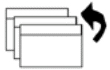

Table 1: SCREEN MANAGER ICON DEFINITIONS
| Icon | Function | Comments |
| Screen | The screen function is used to manually adjust frequency, image position, resolution, contrast and brightness. Only contract and brightness are adjusted to 80 percent for Signa applications. Other features are adjusted using the monitors auto adjust button on the front of the monitor. | |
| Color | This selections if used to make fine adjustments to the display color of the monitor. These adjustments should be left at the default for Signa applications | |
| Power Manager | Used to setup the power management features of the monitor. These adjustments should be left at the default for Signa applications. | |
| Others | Allows adjustments to screen size, border intensity, input priority, power down timer, monitor beeps and if necessary allows resetting the monitor to factory setting. These adjustments should be left at the default for Signa applications. | |
| Information | This menu shows the current ScreenManager settings. No adjustments are made here. | |
| Language | Used to set the language the monitor menu will display in. This only effects the ScreenManager menus and has no effect on display data and text being sent from the host computer. | |
 | Exit | Click this Icon to exit ScreenManager. |